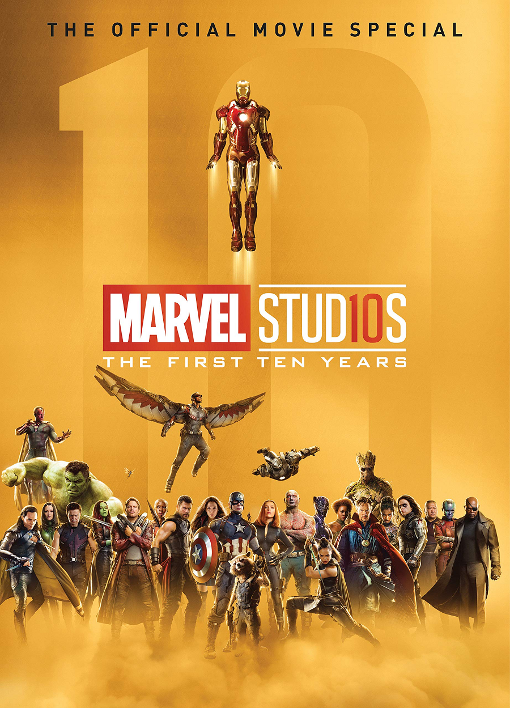
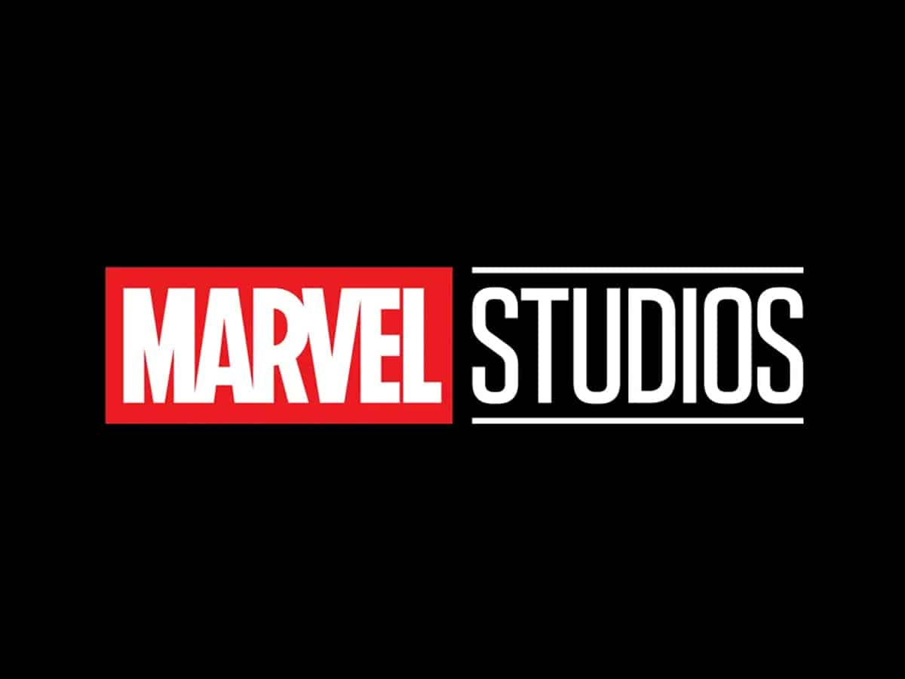

<!DOCTYPE html>
<html lang="en">
<head>
    <meta charset="UTF-8">
    <meta http-equiv="X-UA-Compatible" content="IE=edge">
    <meta name="viewport" content="width=device-width, initial-scale=1.0">
    <link rel="stylesheet" href="css/estilos.css">
    
    <link href="https://fonts.googleapis.com/css2?family=Bebas+Neue&family=Libre+Baskerville:ital,wght@0,700;1,400&family=Open+Sans&display=swap" rel="stylesheet">
    <title>Practica Nro2</title>
</head>

</html>

<body>
    <div class="contenedor">
        <header>
            <h1>
                Bienvenido(a) a mi Practica 2 otra
            </h1>
            <nav>
                <a href="javascript: history.go(-1)">Home</a>
                <a href="#">Servicios</a>
                <a href="#">Contactanos</a>
                <div class="logo">
                <a title="marv" href="https://marvelcinematicuniverse.fandom.com/es/wiki/Marvel_Studios:_The_First_Ten_Years:_The_Official_Movie_Special"></a>
                </div>
            </nav>
        </header>
        <main>
            <div class="logo0">
                

            </div>
            <section>
                <article>
                    <h2>¿Qué es Marvel?</h2>
                    <p>Marvel Studios, LLC4​ (conocida como Marvel Films de 1993 a 1996) es un estudio cinematográfico estadounidense que tiene su sede en los Walt Disney Studios de Burbank (California, Estados Unidos), el estudio es una filial de The Walt Disney Company. Marvel Studios es conocido por producir el Universo cinematográfico de Marvel, basado en los personajes de Marvel Comics.5​

                        Desde 2008, Marvel Studios ha estrenado 27 películas desde Iron Man (2008) hasta Spider-Man: No Way Home (2021) y cinco series de televisión desde 2021, iniciando por WandaVision (2021) hasta Hawkeye (2021). Estas películas y series de televisión comparten continuidad con el UCM o MCU por sus siglas en inglés, (Universo Cinematográfico de Marvel).</p>
                </article>

                <article>
                    <h2>Creadores de comics Marvel </h2>
                    <p>A finales de 1961, siguiendo el consejo de su esposa, <span style="color:rgb(255, 255, 255);">Stan Lee</span> decidió crear el primer número de Los Cuatro Fantásticos, un cómic de superhéroes con estilo propio, el cual, si hubiera supuesto un fracaso, habría sido el final de su carrera como guionista del noveno arte. Afortunadamente, el resultado obtenido fue todo lo contrario, lo que significó el pistoletazo de salida para toda una galería de personajes que, a día de hoy, continúan funcionando tan bien como en el momento de su creación. En la mayoría de los casos, Stan Lee recurrió a <span style="color:rgb(255, 255, 255);">Jack Kirby</span> para la parte gráfica, aunque hay claras excepciones, como son el caso del Doctor Extraño y Spiderman, personajes para los que contó con los lápices de <span style="color:rgb(255, 255, 255);">Steve Ditko</span> .</p>
               
                </article>
            </section>
        </main>
        <aside>
            <section class="aside1">
                <h3>Ultimas noticias</h3>
                <br>
                <p>Marvel Studios tiene también una película sin anunciar para el próximo 3 de noviembre de 2023; así como también otras fechas marcadas para el 16 de febrero, 3 de mayo, 26 de julio y 8 de noviembre de 2024.</p>
                <br>
                <hr>
                <ul class="enlaces">
                    <p>Héroes de Marvel</p>
                    <li><a href="https://www.marvel.com/characters/iron-man-tony-stark">Iron Man</a></li>
                    <li><a href="https://www.marvel.com/characters/thor-thor-odinson">Thor</a></li>
                    <li><a href="https://www.marvel.com/characters/black-widow-natasha-romanoff">Black Widow</a></li>
                    <li><a href="https://www.marvel.com/characters/hulk-bruce-banner">Hulk</a></li>
                    <li><a href="https://www.marvel.com/characters/hawkeye-clint-barton">Hawkeye</a></li>
                    <hr>
                    Haga clic en <a href="javascript: history.go(-1)">Volver</a> para regresar al menu principal
                    
                </ul>
            </section>
        </aside>
        <footer>
            
            <p>
                &copy;2022 Bryan Angles - Location: Bolivia  
                <a href="http://www.upds.edu.bo/"> UPDS - Cbba.</a>
            </p>
        </footer>

    </div>
</body>